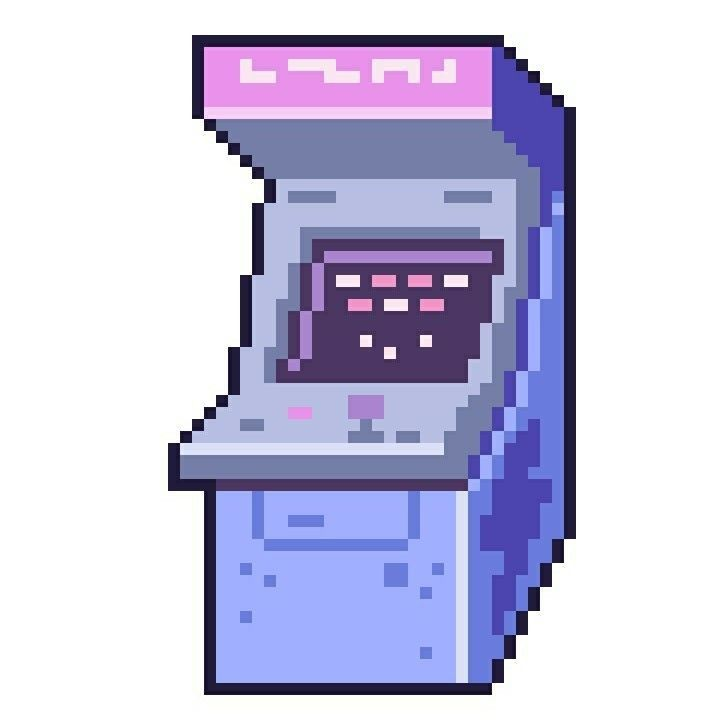

¿Por qué escogimos esta idea?
Escogimos el tema de Máquina Arcade Retro porque es una etapa importante en la historia de los videojuegos. Las máquinas arcade marcaron la infancia de muchas personas y ayudaron al crecimiento de la industria gamer. Además, es un proyecto divertido que combina tecnología y nostalgia.
